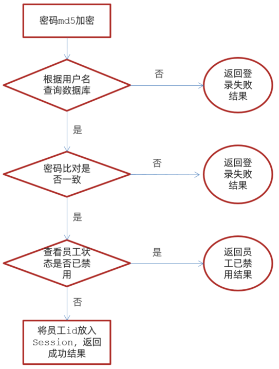

项目概述
包括 系统管理后台 和 移动端应用 两部分。其中系统管理后台主要提供给餐饮企业内部员工使用，可以对餐厅的分类、菜品、套餐、订单、员工等进行管理维护。移动端应用主要提供给消费者使用，可以在线浏览菜品、添加购物车、下单等。
管理端
餐饮企业内部员工使用。 主要功能有:
| 模块 | 描述 |
|---|---|
| 登录/退出 | 内部员工必须登录后,才可以访问系统管理后台 |
| 员工管理 | 管理员可以在系统后台对员工信息进行管理，包含查询、新增、编辑、禁用等功能 |
| 分类管理 | 主要对当前餐厅经营的 菜品分类 或 套餐分类 进行管理维护， 包含查询、新增、修改、删除等功能 |
| 菜品管理 | 主要维护各个分类下的菜品信息，包含查询、新增、修改、删除、启售、停售等功能 |
| 套餐管理 | 主要维护当前餐厅中的套餐信息，包含查询、新增、修改、删除、启售、停售等功能 |
| 订单明细 | 主要维护用户在移动端下的订单信息，包含查询、取消、派送、完成，以及订单报表下载等功能 |
用户端
移动端应用主要提供给消费者使用。主要功能有:
| 模块 | 描述 |
|---|---|
| 登录/退出 | 在移动端, 用户也需要登录后使用APP进行点餐 |
| 点餐-菜单 | 在点餐界面需要展示出菜品分类/套餐分类, 并根据当前选择的分类加载其中的菜品信息, 供用户查询选择 |
| 点餐-购物车 | 用户选中的菜品就会加入用户的购物车, 主要包含 查询购物车、加入购物车、删除购物车、清空购物车等功能 |
| 订单支付 | 用户选完菜品/套餐后, 可以对购物车菜品进行结算支付, 这时就需要进行订单的支付 |
| 个人信息 | 在个人中心页面中会展示当前用户的基本信息, 用户可以管理收货地址, 也可以查询历史订单数据 |
技术选型

用户层
本项目中在构建系统管理后台的前端页面，我们会用到H5、Vue.js、ElementUI等技术。而在构建移动端应用时，我们会使用到微信小程序。
网关层
Nginx是一个服务器，主要用来作为Http服务器，部署静态资源，访问性能高。在Nginx中还有两个比较重要的作用： 反向代理和负载均衡， 在进行项目部署时，要实现Tomcat的负载均衡，就可以通过Nginx来实现。
应用层
SpringBoot： 快速构建Spring项目, 采用 “约定优于配置” 的思想, 简化Spring项目的配置开发。
Spring: 统一管理项目中的各种资源(bean), 在web开发的各层中都会用到。
SpringMVC：SpringMVC是spring框架的一个模块，springmvc和spring无需通过中间整合层进行整合，可以无缝集成。
SpringSession: 主要解决在集群环境下的Session共享问题。
lombok：能以简单的注解形式来简化java代码，提高开发人员的开发效率。例如开发中经常需要写的javabean，都需要花时间去添加相应的getter/setter，也许还要去写构造器、equals等方法。
Swagger： 可以自动的帮助开发人员生成接口文档，并对接口进行测试。
数据层
MySQL： 关系型数据库, 本项目的核心业务数据都会采用MySQL进行存储。
MybatisPlus： 本项目持久层将会使用MybatisPlus来简化开发, 基本的单表增删改查直接调用框架提供的方法即可。
Redis： 基于key-value格式存储的内存数据库, 访问速度快, 经常使用它做缓存(降低数据库访问压力, 提供访问效率), 在后面的性能优化中会使用。
工具
git: 版本控制工具, 在团队协作中, 使用该工具对项目中的代码进行管理。
maven: 项目构建工具。
junit：单元测试工具，开发人员功能实现完毕后，需要通过junit对功能进行单元测试。
数据库
表的结构
| 序号 | 表名 | 说明 |
|---|---|---|
| 1 | employee | 员工表 |
| 2 | category | 菜品和套餐分类表 |
| 3 | dish | 菜品表 |
| 4 | setmeal | 套餐表 |
| 5 | setmeal_dish | 套餐菜品关系表 |
| 6 | dish_flavor | 菜品口味关系表 |
| 7 | user | 用户表（C端） |
| 8 | address_book | 地址簿表 |
| 9 | shopping_cart | 购物车表 |
| 10 | orders | 订单表 |
| 11 | order_detail | 订单明细表 |
Maven项目搭建
项目目录
环境依赖导入
<properties>
<java.version>1.8</java.version>
</properties>
<parent>
<groupId>org.springframework.boot</groupId>
<artifactId>spring-boot-starter-parent</artifactId>
<version>2.4.5</version>
<relativePath/> <!-- lookup parent from repository -->
</parent>
<dependencies>
<dependency>
<groupId>org.springframework.boot</groupId>
<artifactId>spring-boot-starter</artifactId>
</dependency>
<dependency>
<groupId>org.springframework.boot</groupId>
<artifactId>spring-boot-starter-test</artifactId>
<scope>test</scope>
</dependency>
<dependency>
<groupId>org.springframework.boot</groupId>
<artifactId>spring-boot-starter-web</artifactId>
<scope>compile</scope>
</dependency>
<dependency>
<groupId>com.baomidou</groupId>
<artifactId>mybatis-plus-boot-starter</artifactId>
<version>3.4.2</version>
</dependency>
<dependency>
<groupId>org.projectlombok</groupId>
<artifactId>lombok</artifactId>
<version>1.18.20</version>
</dependency>
<dependency>
<groupId>com.alibaba</groupId>
<artifactId>fastjson</artifactId>
<version>1.2.76</version>
</dependency>
<dependency>
<groupId>commons-lang</groupId>
<artifactId>commons-lang</artifactId>
<version>2.6</version>
</dependency>
<dependency>
<groupId>mysql</groupId>
<artifactId>mysql-connector-java</artifactId>
<scope>runtime</scope>
</dependency>
<dependency>
<groupId>com.alibaba</groupId>
<artifactId>druid-spring-boot-starter</artifactId>
<version>1.1.23</version>
</dependency>
</dependencies>
<build>
<plugins>
<plugin>
<groupId>org.springframework.boot</groupId>
<artifactId>spring-boot-maven-plugin</artifactId>
<version>2.4.5</version>
</plugin>
</plugins>
</build>在工程的resources目录下创建application.yml文件,并引入配置
server:
port: 8080
spring:
application:
name: take_away #工程名称（可选），默认为当前项目名称
datasource:
druid:
driver-class-name: com.mysql.cj.jdbc.Driver
url: jdbc:mysql://localhost:3306/test?serverTimezone=Asia/Shanghai&useUnicode=true&characterEncoding=utf-8&zeroDateTimeBehavior=convertToNull&useSSL=false&allowPublicKeyRetrieval=true
username: mytest
password: 123456
mybatis-plus:
configuration:
#在映射实体或者属性时，将数据库中表名和字段名中的下划线去掉，按照驼峰命名法映射
map-underscore-to-camel-case: true
log-impl: org.apache.ibatis.logging.stdout.StdOutImpl
global-config:
db-config:
id-type: ASSIGN_ID创建启动类
@Slf4j
@SpringBootApplication
@ServletComponentScan
public class TakeawayApplication {
public static void main(String[] args) {
SpringApplication.run(TakeawayApplication.class,args);
log.info("成功启动"); //日志输出
}
}@Slf4j : 是lombok中提供的注解, 用来通过slf4j记录日志。
前端静态资源导入
前端资源存放位置到resource下的backend和front
创建配置类WebMvcConfig，设置静态资源映射
用于在Springboot项目中, 默认静态资源的存放目录为 : “classpath:/resources/“, “classpath:/static/“, “classpath:/public/“ ; 而在我们的项目中静态资源存放在 backend, front 目录中, 那么这个时候要想访问到静态资源, 就需要设置静态资源映射。
放在config目录下
@Slf4j
@Configuration
public class WebMvcConfig extends WebMvcConfigurationSupport {
/**
* 设置静态资源映射
* @param registry
*/
@Override
protected void addResourceHandlers(ResourceHandlerRegistry registry) {
log.info("开始进行静态资源映射...");
registry.addResourceHandler("/backend/**").addResourceLocations("classpath:/backend/");
registry.addResourceHandler("/front/**").addResourceLocations("classpath:/front/");
}后台系统登录功能
查看登录请求
通过浏览器调试工具（F12），可以发现，点击登录按钮时，页面会发送请求并提交参数 username和password, 请求参数为json格式数据 {“username”:”admin”,”password”:”123456”}。
此时报404，是因为我们的后台系统还没有响应此请求的处理器，所以我们需要创建相关类来处理登录请求

前端页面分析
点击页面登录触发handLogin方法

当点击 “登录” 按钮, 会触发Vue中定义的 handleLogin 方法

在上述的前端代码中, 大家可以看到, 发送登录的异步请求之后, 获取到响应结果, 在响应结果中至少包含三个属性: code、data、msg 。
代码开发
创建实体类Employee
@Data
public class Employee implements Serializable {
private static final long serialVersionUID = 1L;
private Long id;
private String username;
private String name;
private String password;
private String phone;
private String sex;
private String idNumber; //驼峰命名法 ---> 映射的字段名为 id_number
private Integer status;
private LocalDateTime createTime;
private LocalDateTime updateTime;
@TableField(fill = FieldFill.INSERT)
private Long createUser;
@TableField(fill = FieldFill.INSERT_UPDATE)
private Long updateUser;
}定义Mapper接口
在MybatisPlus中, 自定义的Mapper接口, 需要继承自 BaseMapper。
在Mapper文件下
@Mapper
public interface EmployeeMapper extends BaseMapper<Employee>{
}Service接口
本项目的Service接口, 在定义时需要继承自MybatisPlus提供的Service层接口 IService, 这样就可以直接调用 父接口的方法直接执行业务操作, 简化业务层代码实现。
在service包下
public interface EmployeeService extends IService<Employee> {
}Service实现类
所属包: com.yang.takeaway.service.impl
@Service
public class EmployeeServiceImpl extends ServiceImpl<EmployeeMapper,Employee> implements EmployeeService{
}Controller基础代码
在controller下
import lombok.extern.slf4j.Slf4j;
import org.springframework.beans.factory.annotation.Autowired;
import org.springframework.web.bind.annotation.RequestMapping;
import org.springframework.web.bind.annotation.RestController;
@Slf4j
@RestController
@RequestMapping("/employee")
public class EmployeeController {
@Autowired
private EmployeeService employeeService;
} 导入通用结果类R
此类是一个通用结果类，服务端响应的所有结果最终都会包装成此种类型返回给前端页面。
在common包下
/**
* 服务端结果返回类
* @param <T>
*/
@Data
public class Res<T> {
private Integer code; //编码：1成功，0和其它数字为失败
private String msg; //错误信息
private T data; //数据
private Map map = new HashMap(); //动态数据
public static <T> Res<T> success(T object) {
Res<T> res = new Res<T>();
res.data = object;
res.code = 1;
return res;
}
public static <T> Res<T> error(String msg) {
Res res = new Res();
res.msg = msg;
res.code = 0;
return res;
}
public Res<T> add(String key, Object value) {
this.map.put(key, value);
return this;
}
}A. 如果业务执行结果为成功, 构建R对象时, 只需要调用 success 方法; 如果需要返回数据传递 object 参数, 如果无需返回, 可以直接传递null。
B. 如果业务执行结果为失败, 构建R对象时, 只需要调用error 方法, 传递错误提示信息即可。
登录逻辑
我们看到前端发起的请求为post请求, 所以服务端需要使用注解 @PostMapping
由于前端传递的请求参数为json格式的数据, 这里使用Employee对象接收, 但是将json格式数据封装到实体类中, 在形参前需要加注解@RequestBody
@PostMapping("/login")
public Res<Employee> login(HttpServletRequest request, @RequestBody Employee employee) {
//1、将页面提交的密码password进行md5加密处理
String password = employee.getPassword();
password = DigestUtils.md5DigestAsHex(password.getBytes());
//2、根据页面提交的用户名username查询数据库
LambdaQueryWrapper<Employee> queryWrapper = new LambdaQueryWrapper<>();
queryWrapper.eq(Employee::getUsername, employee.getUsername());
Employee emp = employeeServiceimpl.getOne(queryWrapper);
//3、如果没有查询到则返回登录失败结果
if (emp == null) {
return Res.error("登录失败");
}
//4、密码比对，如果不一致则返回登录失败结果
if (!emp.getPassword().equals(password)) {
return Res.error("登录失败");
}
//5、查看员工状态，如果为已禁用状态，则返回员工已禁用结果
if (emp.getStatus() == 0) {
return Res.error("账号已禁用");
}
//6、登录成功，将员工id存入Session并返回登录成功结果
request.getSession().setAttribute("employee", emp.getId());
return Res.success(emp);
}退出功能
在后台管理系统中，管理员或者员工，登录进入系统之后，页面跳转到后台系统首页面(backend/index.html)，此时会在系统的右上角显示当前登录用户的姓名。
如果员工需要退出系统，直接点击右侧的退出按钮即可退出系统，退出系统后页面应跳转回登录页面。
代码实现
需要在Controller中创建对应的处理方法, 接收页面发送的POST请求 /employee/logout 。
清理Session中的用户id
返回结果
/**
* 员工退出
* @param request
* @return
*/
@PostMapping("/logout")
public Res<String> logout(HttpServletRequest request){
//清理Session中保存的当前登录员工的id
request.getSession().removeAttribute("employee");
return Res.success("退出成功");
}前面我们已经完成了后台系统的员工登录功能开发，但是目前还存在一个问题，用户如果不登录，直接访问系统首页面，照样可以正常访问。
我们需要只有登录成功后才可以访问系统中的页面，如果没有登录, 访问系统中的任何界面都直接跳转到登录页面。
那我们需要一个定义一个过滤器
在filter文件夹下
/**
* 检查用户是否已经完成登录
*/
@WebFilter(filterName = "loginCheckFilter",urlPatterns = "/*")
@Slf4j
public class LoginCheckFilter implements Filter{
//路径匹配器，支持通配符
public static final AntPathMatcher PATH_MATCHER = new AntPathMatcher();
@Override
public void doFilter(ServletRequest servletRequest, ServletResponse servletResponse, FilterChain filterChain) throws IOException, ServletException {
HttpServletRequest request = (HttpServletRequest) servletRequest;
HttpServletResponse response = (HttpServletResponse) servletResponse;
//1、获取本次请求的URI
String requestURI = request.getRequestURI();// /backend/index.html
log.info("拦截到请求：{}",requestURI);
//定义不需要处理的请求路径
String[] urls = new String[]{
"/employee/login",
"/employee/logout",
"/backend/**",
"/front/**"
};
//2、判断本次请求是否需要处理
boolean check = check(urls, requestURI);
//3、如果不需要处理，则直接放行
if(check){
log.info("本次请求{}不需要处理",requestURI);
filterChain.doFilter(request,response);
return;
}
//4、判断登录状态，如果已登录，则直接放行
if(request.getSession().getAttribute("employee") != null){
log.info("用户已登录，用户id为：{}",request.getSession().getAttribute("employee"));
filterChain.doFilter(request,response);
return;
}
log.info("用户未登录");
//5、如果未登录则返回未登录结果，通过输出流方式向客户端页面响应数据
response.getWriter().write(JSON.toJSONString(R.error("NOTLOGIN")));
return;
}
/**
* 路径匹配，检查本次请求是否需要放行
* @param urls
* @param requestURI
* @return
*/
public boolean check(String[] urls,String requestURI){
for (String url : urls) {
boolean match = PATH_MATCHER.match(url, requestURI);
if(match){
return true;
}
}
return false;
}
}Spring中提供的路径匹配器 ;
通配符规则:
符号 含义 ? 匹配一个字符 * 匹配0个或多个字符 ** 匹配0个或多个目录/字符
开启组件扫描
需要在引导类上, 加上Servlet组件扫描的注解, 来扫描过滤器配置的@WebFilter注解， 扫描上之后， 过滤器在运行时就生效了。
@Slf4j
@SpringBootApplication
@ServletComponentScan
public class ReggieApplication {
public static void main(String[] args) {
SpringApplication.run(ReggieApplication.class,args);
log.info("项目启动成功...");
}
}@ServletComponentScan 的作用:
在SpringBoot项目中, 在引导类/配置类上加了该注解后, 会自动扫描项目中(当前包及其子包下)的@WebServlet , @WebFilter , @WebListener 注解, 自动注册Servlet的相关组件 ;
代码执行的过程：

新增员工
当填写完表单信息, 点击”保存”按钮后, 会提交该表单的数据到服务端, 在服务端中需要接受数据, 然后将数据保存至数据库中。
新增员工，其实就是将我们新增页面录入的员工数据插入到employee表。employee表中的status字段已经设置了默认值1，表示状态正常。

需要注意，employee表中对username字段加入了唯一约束，因为username是员工的登录账号，必须是唯一的。
程序执行流程
在开发代码之前，我们需要结合着前端页面发起的请求， 梳理一下整个程序的执行过程：

点击”保存”按钮, 页面发送ajax请求，将新增员工页面中输入的数据以json的形式提交到服务端, 请求方式POST, 请求路径 /employee
服务端Controller接收页面提交的数据并调用Service将数据进行保存
Service调用Mapper操作数据库，保存数据
代码实现
在EmployeeController中增加save方法, 用于保存用户员工信息。
在新增员工时， 按钮页面原型中的需求描述， 需要给员工设置初始默认密码 123456， 并对密码进行MD5加密。
在组装员工信息时, 还需要封装创建时间、修改时间，创建人、修改人信息(从session中获取当前登录用户)。
/**
* 新增员工
* @param employee
* @return
*/
@PostMapping
public Res<String> save(HttpServletRequest request,@RequestBody Employee employee){
log.info("新增员工，员工信息：{}",employee.toString());
//设置初始密码123456，需要进行md5加密处理
employee.setPassword(DigestUtils.md5DigestAsHex("123456".getBytes()));
employee.setCreateTime(LocalDateTime.now());
employee.setUpdateTime(LocalDateTime.now());
//获得当前登录用户的id
Long empId = (Long) request.getSession().getAttribute("employee");
employee.setCreateUser(empId);
employee.setUpdateUser(empId);
employeeService.save(employee);
return Res.success("新增员工成功");
}此时我们进行测试时，，添加用户时， 输入了一个已存在的用户名时，前端界面出现错误提示信息。因为在 employee 表结构中，我们针对于username字段，建立了唯一索引，添加重复的username数据时，违背该约束，就会报错。但是此时前端提示的信息并不具体，用户并不知道是因为什么原因造成的该异常，我们需要给用户提示详细的错误信息 。
全局异常处理
需要对程序中可能出现的异常进行捕获，通常有两种处理方式：
1. 在Controller方法中加入 try…catch 进行异常捕获
如果采用这种方式，虽然可以解决，但是存在弊端，需要我们在保存其他业务数据时，也需要在Controller方法 中加上try...catch进行处理，代码冗余，不通用。
2. 使用异常处理器进行全局异常捕获
采用这种方式来实现，我们只需要在项目中定义一个通用的全局异常处理器，就可以解决本项目的所有异常。
全局异常处理器
在项目中自定义一个全局异常处理器，在异常处理器上加上注解 @ControllerAdvice,可以通过属性annotations指定拦截哪一类的Controller方法。 并在异常处理器的方法上加上注解 @ExceptionHandler 来指定拦截的是那一类型的异常。
异常处理方法逻辑:
- 指定捕获的异常类型为 SQLIntegrityConstraintViolationException
- 解析异常的提示信息, 获取出是那个值违背了唯一约束
- 组装错误信息并返回
代码实现：
/**
* 全局异常处理
*/
@ControllerAdvice(annotations = {RestController.class, Controller.class})
@ResponseBody
@Slf4j
public class GobalException {
/**
* 异常处理
*
* @param ex
* @return
*/
@ExceptionHandler(SQLIntegrityConstraintViolationException.class)
public Res<String> exceptionHandler(SQLIntegrityConstraintViolationException ex) {
log.error(ex.getMessage());
if (ex.getMessage().contains("Duplicate entry")) {
String[] split = ex.getMessage().split(" ");
String msg = split[2] + "已存在";
return Res.error(msg);
}
return Res.error("未知错误");
}
}上述的全局异常处理器上使用了的两个注解 @ControllerAdvice , @ResponseBody , 他们的作用分别为:
@ControllerAdvice : 指定拦截那些类型的控制器;
@ResponseBody: 将方法的返回值 R 对象转换为json格式的数据, 响应给页面;